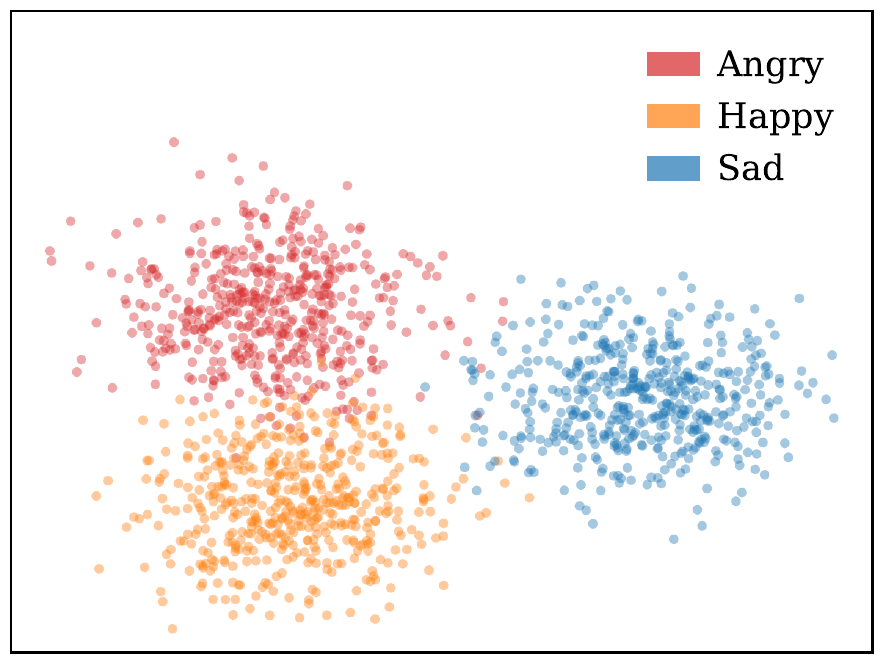
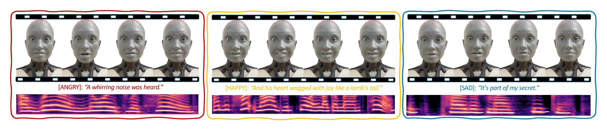

DUET: Unified Dual-Space Emotion Control for Diffusion and Flow-Matching Driven Text-to-Speech
Xu Zhang, Longbing Cao, Zhangkai Wu
arXiv:2606.00066 (2026) · Free to read on arXiv (arXiv non-exclusive distribution licence)
Also indexed in: Semantic Scholar · OpenAlex · dblp · alphaXiv

Quick facts
| Method name | DUET |
|---|---|
| Authors | Xu Zhang, Longbing Cao, Zhangkai Wu |
| arXiv | arXiv:2606.00066 (DOI 10.48550/arXiv.2606.00066) |
| Task | Emotion control for pretrained diffusion and flow-matching text-to-speech models, with the TTS backbone kept frozen (no retraining) |
| Full name | DUET = unified DUal-space Emotion conTrol |
| Method components | Hidden-state steering along probe-derived emotion directions, scaled to the hidden-state norm, plus mel-space guidance with emotion2vec gradients backpropagated through the Vocos vocoder, in one per-step update |
| Backbones (frozen) | F5-TTS (DiT flow-matching), Matcha-TTS (Transformer flow-matching), GradTTS (score-based diffusion), ProDiff (DDPM, progressive distillation), StableTTS (lightweight flow-matching) |
| Datasets | Test splits of ESD, CREMA-D and IEMOCAP; target emotions angry, happy and sad |
| Metrics | Emotion accuracy (%) macro-averaged over two fine-tuned SER models, HuBERT-large and WavLM-large, neither used for guidance or probe labeling; human NMOS and EMOS on a 1-5 scale |
| Baselines | 10 supervised emotional TTS systems: Qwen3-TTS, CosyVoice2, EmoVoice, Chatterbox, ChatTTS, IndexTTS2, OpenAudio, EmoSphere++, EmotiVoice, EmoKnob |
| Headline result | DUET + GradTTS reaches 75.5% average emotion accuracy on ESD, 28.7 points above the strongest baseline, Qwen3-TTS (46.8%) |
| Stated limitations | Weaker on temporally concentrated emotions such as anger, because one uniform steering direction is applied across positions; categorical emotions only |
| Robot deployment | Ameca humanoid robot, with phoneme-to-viseme lip synchronization and emotion-matched facial expression presets |
| Publication and access | arXiv preprint arXiv:2606.00066 (cs.SD; eess.AS), v1 submitted 20 May 2026; free to read on arXiv under arXiv's non-exclusive distribution licence |
| BibTeX key | zhang2026duet |
Main results
| Setting | Result | Compared with |
|---|---|---|
| ESD test split, DUET plugged into frozen GradTTS, average over angry/happy/sad (Table 1) | Average emotion accuracy = 75.5%“On ESD, DUET plugged into GradTTS achieves the best result of 75.5%, an absolute improvement of 28.7% over the strongest baseline Qwen3-TTS at 46.8%.” | Qwen3-TTS, strongest of 10 supervised baselines = 46.8% |
| CREMA-D test split (91 speakers), DUET plugged into frozen ProDiff (Table 1) | Average emotion accuracy = 75.5%“Results on CREMA-D, which contains 91 speakers, show the largest DUET-baseline margin, indicating robustness to broader speaker variation.” | Qwen3-TTS, strongest baseline on CREMA-D = 38.0% |
| Weakest backbone: DUET plugged into frozen StableTTS, all three datasets (Table 1) | Average emotion accuracy = 43.3% (ESD), 32.8% (CREMA-D), 48.8% (IEMOCAP)“StableTTS is the only backbone that does not surpass every supervised baseline, a limitation attributable to its lightweight architecture whose fewer layers constrain its emotion-encoding capacity.” | Qwen3-TTS = 46.8% (ESD), 38.0% (CREMA-D), 44.2% (IEMOCAP); StableTTS beats all baselines only on IEMOCAP |
| Component ablation on F5-TTS with ESD (Table 2) | Full DUET = 64.9%; without hidden-state steering = 40.6%; without mel-space guidance = 45.4% (average SER accuracy)“Removing hidden state steering causes a 24.3% average drop and removing mel-space guidance causes a 19.5% drop, validating that both components contribute substantially.” | — |
| Blind listening test, 20 listeners, 36 samples, 1-5 scale, vs the three strongest baselines (Table 3) | Emotion appropriateness EMOS = 3.93 (highest)“DUET achieves the highest EMOS of 3.93, exceeding Qwen3-TTS by 0.18 and CosyVoice2 by 0.61.” | Qwen3-TTS = 3.75, EmoKnob = 3.48, CosyVoice2 = 3.32 |
| Same listening test, naturalness (Table 3) | Naturalness NMOS = 3.83 (third of four systems)“Its NMOS of 3.83 exceeds EmoKnob at 3.54 despite requiring no explicit emotion supervision, and the moderate gap to Qwen3-TTS reflects the slight spectral perturbation introduced by mel-space guidance.” | Qwen3-TTS = 4.18 (best), CosyVoice2 = 4.02, EmoKnob = 3.54 |
Quoted text is verbatim from the paper.
Key points
- In frozen diffusion and flow-matching TTS models, emotion is a linearly decodable direction of the hidden states, nearly orthogonal to speaker identity (absolute cosine similarity 0.029 on F5-TTS).
- DUET unifies hidden-state steering and mel-space guidance in one per-step update. Steering uses probe-derived emotion directions at the most discriminative layer; guidance backpropagates emotion2vec gradients through the Vocos vocoder to the mel estimate.
- On ESD, CREMA-D and IEMOCAP, four of five DUET-equipped frozen backbones (F5-TTS, Matcha-TTS, GradTTS, ProDiff) beat all 10 supervised emotional-TTS baselines in average emotion accuracy; StableTTS beats them only on IEMOCAP.
- Ablation on F5-TTS with ESD: removing hidden-state steering lowers average emotion accuracy from 64.9% to 40.6%, and removing mel-space guidance lowers it to 45.4%, so both components contribute.
- In a blind test with 20 listeners, DUET has the highest emotion appropriateness (EMOS 3.93 vs 3.75 for Qwen3-TTS), but its naturalness (NMOS 3.83) trails Qwen3-TTS (4.18) and CosyVoice2 (4.02).

Abstract
Diffusion and flow-matching based text-to-speech (TTS) models excel in naturalness but often lack explicit emotion control, as emotional signals remain entangled with speaker identity. We discover that emotion embedding emerges as a linearly decodable direction of frozen hidden states, nearly orthogonal to the direction embedding speaker identity. This inspires a plug-and-play framework DUET for emotion control over pretrained diffusion and flow-matching based TTS models. During generation, DUET unifies dual-space control to achieve fine-grained emotion intervention in a single per-step update: hidden space steering shifts generation along the target emotion direction, while mel-space guidance refines spectral details through gradients backpropagated from a differentiable vocoder. We validate DUET on five architecturally diverse pretrained TTS backbones across three datasets, where it outperforms 10 supervised state-of-the-art emotional TTS baselines across paradigms and achieves the highest human-rated emotion appropriateness. To further showcase its qualitative behavior, we deploy DUET on an Ameca humanoid robot, where it produces richly expressive emotional speech on the humanoid, demonstrating the strong potential for plug-and-play affective interaction for embodied agents.
Frequently asked questions
What does DUET stand for?
DUET stands for unified DUal-space Emotion conTrol, written out in the title as Unified Dual-Space Emotion Control. Section 3 of the arXiv paper uses the heading "DUET: Unified Dual-Space Emotion Steering".
What is the key finding behind DUET?
In frozen diffusion and flow-matching TTS models, emotion emerges as a linearly decodable direction of the hidden states that is nearly orthogonal to the speaker-identity direction (absolute cosine similarity 0.029 on F5-TTS). Steering along it shifts the emotion direction while leaving the speaker-identity direction nearly unchanged in the hidden state.
Does DUET require retraining the TTS model?
No. The TTS backbone stays frozen, and DUET acts during generation with one per-step update that combines hidden-state steering with mel-space guidance, in which emotion2vec gradients are backpropagated through the Vocos vocoder to the clean mel estimate. The only trained parts are lightweight linear probes on frozen hidden states, used to choose the steering layer and derive the emotion direction.
How was DUET evaluated, and what are its main results?
DUET was plugged into five frozen backbones (F5-TTS, Matcha-TTS, GradTTS, ProDiff, StableTTS) and tested on ESD, CREMA-D and IEMOCAP against 10 supervised emotional TTS baselines, with emotion accuracy averaged over HuBERT-large and WavLM-large recognizers. Its best average accuracies are 75.5% on ESD (GradTTS), 75.5% on CREMA-D (ProDiff) and 75.8% on IEMOCAP (Matcha-TTS), against 46.8%, 38.0% and 44.2% for the strongest baseline, Qwen3-TTS. Four of the five backbones beat every baseline on average, while StableTTS does so only on IEMOCAP.
How does DUET do in human listening tests?
In a blind test, 20 listeners rated 36 samples on a 1-5 scale, comparing DUET with the three strongest baselines. DUET had the highest emotion-appropriateness score (EMOS 3.93, vs 3.75 for Qwen3-TTS), but its naturalness score (NMOS 3.83) was below Qwen3-TTS (4.18) and CosyVoice2 (4.02), though above EmoKnob (3.54). The authors attribute the gap to Qwen3-TTS to slight spectral perturbation from mel-space guidance.
How is DUET different from EmoSteer-TTS?
EmoSteer-TTS is a training-free method that steers flow-matching TTS with activation vectors and per-position SER selection, and the DUET authors state that prior TTS emotion steering has operated on DiT architectures only. DUET is applied to both diffusion backbones (GradTTS, ProDiff) and flow-matching backbones (F5-TTS, Matcha-TTS, StableTTS), and adds mel-space guidance through a differentiable vocoder. EmoSteer-TTS is not among the 10 baselines in Table 1, so the paper reports no direct numerical comparison with it.
How do I cite DUET?
Cite it as: Zhang, X., Cao, L., & Wu, Z. (2026). DUET: Unified Dual-Space Emotion Control for Diffusion and Flow-Matching Driven Text-to-Speech. arXiv. https://doi.org/10.48550/arXiv.2606.00066 BibTeX is available at https://codezx6.github.io/papers/duet.html#cite and in https://codezx6.github.io/publications.bib.
中文摘要
DUET：面向扩散与流匹配文本转语音的统一双空间情感控制
扩散与流匹配 TTS 往往缺乏显式情感控制。本文发现情感是冻结隐状态中的线性可解码方向，与说话人身份近乎正交。DUET 在每个去噪步结合隐状态操控与梅尔谱空间引导（梯度经可微分声码器反传），无需重训模型。在 5 个冻结骨干、3 个数据集上，4 个骨干平均情感准确率超过全部 10 个有监督基线（ESD 上 75.5% 对 46.8%）；主观情感恰当性最高，自然度低于 Qwen3-TTS。
关键词：情感语音合成；扩散模型语音合成；流匹配语音合成；隐状态操控；梅尔谱空间引导；可微分声码器
Keywords
emotional text-to-speech emotion control diffusion-based TTS flow-matching TTS representation steering classifier guidance differentiable vocoder humanoid robot
Also referred to as: Unified Dual-Space Emotion Control; Unified Dual-Space Emotion Steering; hidden state steering; mel-space guidance via differentiable vocoder; training-free emotion control on frozen backbones.
Research area map and related search terms
Field path (broad to narrow): artificial intelligence › machine learning › deep learning › speech and audio processing › spoken language technology › generative AI › speech synthesis › text-to-speech (TTS) › expressive TTS › emotional TTS › emotion control in TTS › training-free emotion steering › DUET
Task
emotional text-to-speech emotional speech synthesis expressive speech synthesis emotion-controllable TTS controllable speech synthesis affective speech generation training-free emotion control
Method
activation steering representation steering steering vectors for TTS inference-time intervention classifier guidance for speech linear probing of hidden states emotion direction in hidden states speaker-emotion disentanglement
Models used or compared
F5-TTS Matcha-TTS Grad-TTS ProDiff StableTTS Vocos vocoder emotion2vec Qwen3-TTS CosyVoice2 EmoKnob EmoSphere++ IndexTTS2
Datasets
ESD (Emotional Speech Dataset) CREMA-D IEMOCAP
中文
情感语音合成 情感可控语音合成 表现力语音合成 可控语音合成 表征引导 推理时干预 扩散模型语音合成 流匹配语音合成 人形机器人语音
Related areas
affective computing human-robot interaction social robotics embodied AI conversational agents voice assistants digital humans controllable generation representation engineering mechanistic interpretability diffusion models flow matching score-based generative models neural vocoders mel spectrogram prosody modeling speaking style control zero-shot TTS voice cloning emotional voice conversion speech emotion recognition
Applications
expressive humanoid robots empathetic dialogue systems audiobook narration game and virtual character voices assistive speech
Related benchmarks (not used in this paper)
EmoV-DB RAVDESS MSP-Podcast LibriTTS VCTK LJSpeech
中文 (扩展)
语音合成 文本转语音 TTS 情感TTS 情绪语音合成 风格可控语音合成 韵律控制 扩散模型 流匹配 声码器 梅尔频谱 表征工程 可解释性 情感计算 人机交互 社交机器人 具身智能 数字人 零样本语音合成 情感语音转换
Terms are grouped by role. "Related areas", "Applications" and "Related benchmarks (not used in this paper)" describe the surrounding field, not results of this paper. See the site-wide research area map.
Related papers
Affective speech
- PhysioSER: Learning Physiology-Informed Vocal Spectrotemporal Representations for Speech Emotion Recognition (arXiv:2602.13259, 2026)
Other topics
- DSTCN: Exploiting dynamic spatio-temporal correlations for origin-destination demand prediction (2026)
- URMDet-SimFire: Trustworthy multimodal detection with uncertainty and reliability modeling for fire and smoke analytics (2026)
- S2CMEN: A Mutually Enhancement Network for Superpixel Segmentation and Classification of Hyperspectral Image (2025)
- MR-UFP: Enhancing urban flow prediction via mutual reinforcement with multi-scale regional information (2025)
- BiST-IF: Enhancing origin–destination flow prediction via bi-directional spatio-temporal inference and interconnected feature evolution (2025)
- Automatic visual recognition for leaf disease based on enhanced attention mechanism (2024)
- S3CFSL: Spatial-Spectral–Semantic Cross-Domain Few-Shot Learning for Hyperspectral Image Classification (2024)
- ST-FCL: Spatio-temporal fusion and contrastive learning for urban flow prediction (2023)
- MC-STL: Mask- and Contrast-Enhanced Spatio-Temporal Learning for Urban Flow Prediction (2023)
Cite this paper
@article{zhang2026duet,
title = {{DUET}: Unified Dual-Space Emotion Control for Diffusion and Flow-Matching Driven Text-to-Speech},
author = {Zhang, Xu and Cao, Longbing and Wu, Zhangkai},
journal = {arXiv preprint arXiv:2606.00066},
year = {2026},
eprint = {2606.00066},
archivePrefix= {arXiv},
primaryClass = {cs.SD},
doi = {10.48550/arXiv.2606.00066},
url = {https://arxiv.org/abs/2606.00066}
}Zhang, X., Cao, L., & Wu, Z. (2026). DUET: Unified Dual-Space Emotion Control for Diffusion and Flow-Matching Driven Text-to-Speech. arXiv. https://doi.org/10.48550/arXiv.2606.00066